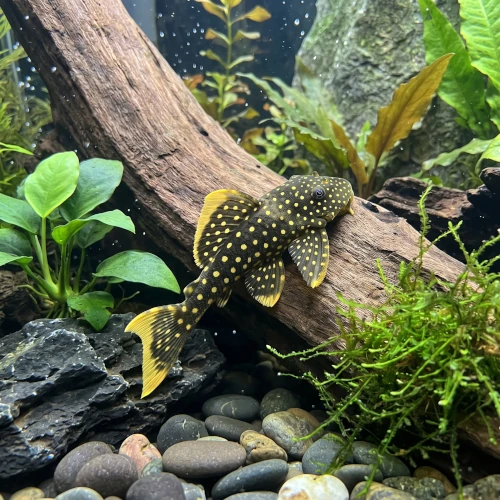

Nome popular principal
Cascudo Pepita de Ouro
Cascudo Pepita de Ouro, Gold Nugget Pleco, L018, L085
Ficha de peixe
Cascudos e Limpa-Fundos
Uma das joias mais cobiçadas do aquarismo amazônico, destacando-se pelo padrão pontilhado em tom amarelo reluzente sobre fundo escuro.

Nome popular principal
Cascudo Pepita de Ouro, Gold Nugget Pleco, L018, L085
Nome científico
Nome técnico essencial para taxonomia, cruzamento de manejo e referência editorial consistente.
Dificuldade de manejo
Use este nível como referência inicial, sempre considerando volume, estabilidade e compatibilidade do aquário.
Seção 1
Seção 2
Seções 4 a 6
Cascudo Pepita de Ouro tem hábito alimentar onívoro. Média. 1 a 2 vezes ao dia. Alimenta-se de biofilme, algas, rações afundantes ricas em spirulina e aceita vegetais frescos fatiados, além de pequena parcela de proteína animal.
Difícil identificação visual; machos adultos apresentam a cabeça ligeiramente mais larga e perfil mais achatado que as fêmeas. Tipo de reprodução: Ovíparo. Dificuldade de reprodução: Avançado. A reprodução em cativeiro é muito rara e complexa, exigindo simulação rigorosa de sazonalidade, água bastante quente e grandes cavernas.
Média. Substrato recomendado: Areia fina de rio com muitas formações de pedras lisas, troncos e cavernas. Necessidade de esconderijos: Alta. A presença de troncos e pedras lisas é fundamental para a raspagem de micro-organismos e demarcação de tocas seguras.
Seção 7
Sendo nativo de corredeiras quentes da Amazônia, é muito sensível a quedas bruscas de temperatura e acúmulo de amônia na água.
Seção 8
O código L018 identifica os espécimes juvenis/subadultos do Rio Xingu com pintas amarelas, enquanto o L085 é o código atribuído aos adultos da mesma espécie (Baryancistrus xanthellus).
Como habita as águas quentes do Rio Xingu, necessita de temperaturas mantidas entre 26°C e 30°C com alta oxigenação.
É uma espécie de nível intermediário a avançado, exigindo aquários bem maturados, excelente filtragem e ambiente rico em pedras e troncos.